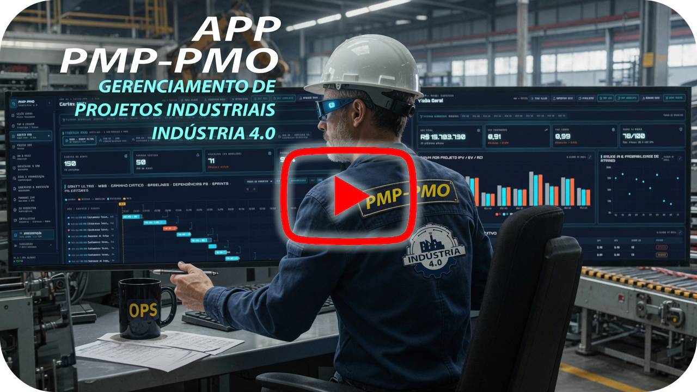
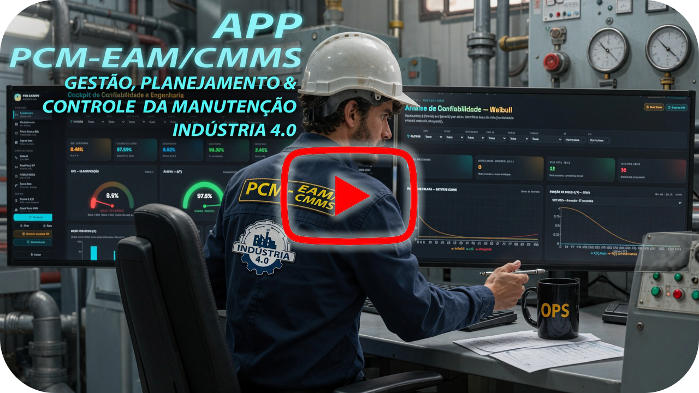
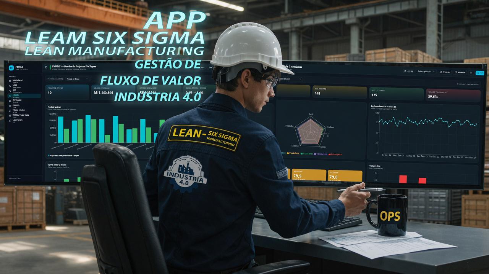
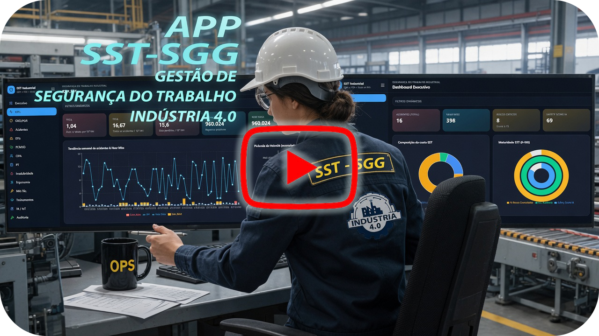

Gestão e Hiperautomação Industrial que se transforma em App — da dor do chão de fábrica ao C-Level.
Sistemas determinísticos de alta densidade analítica, desenvolvidos client-side e serverless-edge.

Ecossistema PMP-PMO — Indústria 4.0
A engenharia e a gestão de projetos no limiar da automação analítica. Ao lado, você assiste à materialização da Manutenção 4.0 integrada às mais rigorosas metodologias do PMBOK/PMI — uma plataforma analítica proprietária de alta densidade, desenvolvida sob medida para missões críticas em ambientes industriais e grandes obras de engenharia. Uma solução projetada para operar de forma determinística client-side e serverless-edge.
Cronogramas, custos e recursos
- Gantt Ultra & Linha HOJE: WBS avançada, baseline vs. real, Caminho Crítico em tempo real.
- Motor CPM Nativo: Forward/Backward Pass real, folgas negativas acusadas na hora.
- Simulador de Monte Carlo (5.000 iterações): curvas de probabilidade P50, P80 e P90.
- EVM ERP: Planejado × Entregue × Custo Real, com EAC e TCPI automatizados.
Governança e análise preditiva
- Matriz de Riscos 5×5 (ISO 31000): exposição financeira por quadrante.
- Módulo Paradas 24h: correlação de microparadas e Bad Actors do chão de fábrica.
- Motor Heurístico Local: classifica ativos e projetos sem depender de internet ou LLMs externos.
Três gargalos que drenam sua operação silenciosamente
Antes de qualquer ferramenta, é preciso nomear a dor.
Silos de Dados e Desconexão Estratégica
Sua empresa opera com ERP e planilhas isoladas, mas os sistemas não são integrados. O fator mais crítico é a ausência de uma conexão determinística entre os dados operacionais e a gestão estratégica.
Gestão Reativa e Falta de Previsibilidade
As equipes de manutenção e planejamento atuam de forma reativa, limitando-se a apagar incêndios cotidianos.
Sobrecarga Operacional e Ineficiência de Processos
Perdas invisíveis causadas pela distribuição de tarefas sem o respaldo de matrizes de risco e modelagens preditivas.
Engenharia de produção aplicada, traduzida em código.
Engenheiro de Produção com especializações em Gestão Industrial e expertise no desenvolvimento de soluções tecnológicas client-side e serverless-edge. Minha atuação foca na tomada de decisão assertiva, na geração de resultados e na melhoria contínua. Uno metodologias de governança, confiabilidade e processos à capacidade de mapear, arquitetar e codificar ecossistemas de alta performance, traduzidos em aplicações de Gestão Integrada.
Após um período dedicado à docência, redirecionei essa bagagem técnica e gerencial para onde ela gera impacto direto: a operação industrial. Utilizando agentes autônomos, engenharia de prompt avançada, automações e fluxos de trabalho orquestrados, desenvolvi 5 aplicações completas de gestão industrial — cada uma projetada para sanar uma dor real do chão de fábrica.
O resultado são soluções que integram as regras de negócio, operam com dados em tempo real e funcionam como ferramentas determinísticas. Elas mitigam gargalos operacionais e viabilizam uma tomada de decisão ágil, fundamentada estritamente em parâmetros técnicos.
É a exata disciplina de um Product Owner (PO) Técnico: traduzir a linguagem da operação para a semântica do código, eliminando em definitivo o gap de comunicação entre quem vivencia o problema e quem desenvolve a solução.
Framework aplicado em cada app
- Mapeamento da dor: identificação do gargalo real de gestão na operação.
- Modelagem de negócio: estruturação de métricas, regras e cálculos que geram valor para o tomador de decisão.
- Engenharia de dados: construção da arquitetura e dos motores de cálculo determinísticos.
- UX/UI Design: desenho da experiência e interface do usuário com foco no ambiente fabril.
- Homologação: validação prática com dados reais de produção.
Da sala de aula ao código que gerencia fábricas
Antes de escrever a primeira linha de um desses aplicativos, o caminho passou por outros lugares — e cada um deles deixou uma marca no que este portfólio é hoje.
Formar pessoas
Anos dedicados à docência técnico-profissional, na FIEB/SENAI. Foi ali que aprendi, na prática, que ensinar bem exige entender profundamente a dor de quem está do outro lado.
Aplicar na prática
Redirecionei essa bagagem para a operação industrial, colocando os MBAs e especializações acumulados ao longo do caminho a serviço de problemas reais de gestão — não mais só em teoria.
Construir com as próprias mãos
Decidi ir um passo além: usar IA aplicada e engenharia de prompt para desenvolver, sozinho, as ferramentas que a indústria realmente precisa. Os 5 apps deste portfólio são o resultado desse passo.
Próximo capítulo
Hoje, busco onde essa combinação — domínio técnico de gestão e capacidade de construir — gera mais impacto: numa indústria, num produto de software, ou como consultor.
Clique numa badge para ver a métrica real, medida ao vivo neste seu carregamento de página — não é uma alegação estática.

Ecossistema PCM-EAM/CMMS Cockpit — Indústria 4.0
Manutenção 4.0 através do PCM EAM/CMMS Cockpit: uma plataforma de altíssima densidade analítica projetada para centralizar a operação, antecipar falhas e otimizar o ciclo de vida de ativos industriais complexos. Codificado para rodar 100% client-side e serverless-edge, processando dados sensíveis em milissegundos e persistindo tudo de forma redundante via IndexedDB e localStorage.
Motores de cálculo
- Operação: OEE, Disponibilidade, Desempenho, Qualidade, Backlog e Downtime em gauges de Classe Mundial, com Plano Mestre de 52 semanas em heatmap.
- Confiabilidade Avançada: Distribuição de Weibull por ativo via median ranks, com cálculo de RUL no Digital Twin.
- Engenharia de Análise de Falhas: FMEA/FMECA com RPN automatizado, RCA por Ishikawa (6M) e 5 Porquês.
- Gestão Financeira & LCC: Custo de Ciclo de Vida cruzado com Spare Parts MRO, energia e métricas ESG.
- Simulação Estatística: Monte Carlo em tempo real com referências de risco P50 e P90.

BPM-CBOK — Indústria 4.0
Fusão entre o gerenciamento de processos de negócios (BPM-CBOK) e a engenharia de operações da Indústria 4.0: um Console de Comando (Cyber-Command HUD) projetado para diagnosticar, auditar e otimizar processos de manufatura com altíssima densidade analítica, rodando sob o paradigma serverless-edge e client-side.
Analytics avançado do CBOK
- Maturidade Operacional (Escala CMMI): avalia em milissegundos o nível de maturidade dos processos de 0 a 5.
- Engenharia Lean (VA vs. NVA): separa Tempo Agregador de Valor do Tempo Desperdiçado para expor gargalos de redesenho.
- Governança de Riscos (RPFMEA Scatter): correlação baseada nas normas AIAG/VDA de PFMEA.
- Mineração de Processos: identifica anomalias e variantes de fluxo fora do padrão BPMN 2.0.
- Gêmeo Digital: aplicação prática da Lei de Little (Teoria das Filas) para prever gargalos iminentes.
- Alinhamento Estratégico: Radar Multi-KPI cruzando performance com metas do BSC e ISO 9001 / IATF 16949.

Lean Six Sigma + Lean Manufacturing — Indústria 4.0
A fusão entre a filosofia Lean, o controle estatístico de processo e a inteligência industrial preditiva. Uma plataforma analítica proprietária que integra, de forma nativa, as metodologias de mitigação de perdas do Lean Manufacturing ao rigor estatístico do Six Sigma, com IA embarcada para otimizar os fluxos mais complexos da indústria.
Integração com resultantes críticas
- VSM Dashboard: mapeamento automatizado do fluxo de valor, takt time e os 7 desperdícios clássicos.
- Control Charts (CEP): as 8 Regras de Nelson em tempo real, com Cp/Cpk e DPMO.
- Gestão DMAIC & Funil de Savings: RTY por fase e impacto financeiro contra a meta.
- Kanban Digital & Limites WIP: dimensionamento eletrônico dinâmico de cartões.
- Waste Hunter & Lean Green (ESG): caça de perdas ocultas e OEE-Energy.
- Auditoria 5S & Poka-Yoke Digital: diagramas radar por setor com sugestão de dispositivos à prova de erros.

SST-SGG Industrial — Indústria 4.0
Segurança e Saúde no Trabalho (SST-SGG) integrada à Cultura 4.0: um ecossistema com altíssima densidade analítica desenvolvido para centralizar, auditar e antecipar riscos ocupacionais em plantas de manufatura e operações de engenharia pesada, rodando 100% client-side e serverless-edge.
Módulos de missão crítica
- GRO / PGR & Matriz 5×5 (NR-01): Mapeamento de riscos ocupacionais fundamentado na ISO 31000 e MIL-STD-882.
- PCMSO & Saúde Ocupacional (NR-07): Métricas de aptidão, exames e restrições.
- Auditoria Normativa & Semáforo de Vencimento: Cruzamento de NRs vigentes com evidências de campo e prazos legais.
- Inteligência Preditiva de Risco: Score de Risco por área combinando frequência, severidade e recorrência.
- IoT, Ergonomia & NRs Técnicas: Mapas de Safety Score, probabilidades, anomalias e ICS médio, com módulos preparados para receber bases de dados de sensores industriais, análises ergonômicas e vistorias de Permissões de Trabalho(PT).
35 indicadores matemáticos, um ecossistema de inteligência prescritiva
Cenário-modelo para uma planta industrial de médio/grande porte, faturamento de referência de R$ 100 milhões/ano.
Os valores abaixo compõem um cenário-modelo com dados simulados (planta de R$ 100M/ano), usado para demonstrar a lógica de cálculo dos motores analíticos de cada APP. Obs.: Não são dados nem resultados auditados de um cliente específico.
| Indicador | Situação anterior | Com o app | Ganho estimado |
|---|---|---|---|
| MTTR | 4,5 horas | 3,51 horas | -22% em tempo de máquina parada |
| OEE | 72% | 78,5% | +6,5 p.p. de capacidade real |
| CAPEX / EVM (desvios) | R$ 3.000.000 | R$ 2.580.000 | R$ 420.000 injetados na margem |
| Prazos (Monte Carlo) | 60 dias de atraso médio | 39 dias de desvio | -35% em multas de atraso |
| Mão de obra (horas extras) | R$ 500.000 | R$ 410.000 | R$ 90.000 economizados |
| COQ (qualidade) | R$ 1.200.000 | R$ 900.000 | R$ 300.000 de redução de desperdício |
| Risco ativo (ISO 31000) | R$ 2.000.000 exposição | R$ 1.200.000 | R$ 800.000 em riscos evitados |
| Indicador | Sem o Cockpit | Com o Cockpit | Retorno estimado |
|---|---|---|---|
| MTBF | 200 h operacionais | 264 h operacionais | +32% de tempo de máquina rodando |
| Backlog | 4 semanas acumuladas | 3,4 semanas | -15% de sobrecarga operacional |
| LCC (ativos) | R$ 5.000.000 | R$ 4.400.000 | R$ 600.000 poupados |
| Estoque MRO | R$ 2.000.000 imobilizados | R$ 1.600.000 | R$ 400.000 liberados no caixa |
| Reincidência de quebras | 12/ano por ativo | 6/ano por ativo | -45% de retrabalho |
| RPN (FMEA) | Modos de falha críticos | Ações mitigadoras automáticas | -28% de severidade de risco |
| Energia (ESG) | R$ 3.000.000/ano | R$ 2.880.000/ano | R$ 120.000 economizados |
| Indicador de processo | Sem o HUD | Com o Cyber-HUD | Ganho estimado |
|---|---|---|---|
| Lead Time | 12 dias de ciclo | 9 dias de ciclo | -25% de tempo de resposta |
| Desperdício (NVA) | 2,0h por turno | 1,4h por turno | -30% de tempo desperdiçado |
| Maturidade CMMI | Processos caóticos (<2) | Processos definidos (>3) | +15% de eficiência interna |
| Variantes de fluxo | 15 caminhos incorretos | 9 caminhos otimizados | -40% de erros de conformidade |
| Custos RPFMEA | R$ 1.500.000 em riscos | R$ 1.230.000 | R$ 270.000 poupados |
| Throughput | 1.000 un/turno | 1.080 un/turno | +8% de vazão fabril |
| Preparação para auditoria ISO | 120 horas | 48 horas | -60% de esforço |
| Indicador estatístico | Sem o app | Com o módulo | Ganho estimado |
|---|---|---|---|
| DPMO | 22.000 | 12.100 | -45% de refugo bruto |
| Takt Time | 40 min/ciclo | 34 min/ciclo | +15% de velocidade na linha |
| RTY | 88% | 93% | R$ 5M fluindo sem retrabalho |
| Estoque WIP | R$ 1.500.000 | R$ 1.170.000 | R$ 330.000 injetados no caixa |
| Funil de Savings | Identificação lenta | Caça automatizada por IA | R$ 250.000 capturados mais rápido |
| OEE-Energy (ESG) | Desperdício oculto | Energia atrelada à produção | R$ 360.000 economizados |
| Falhas humanas | Erros recorrentes | Poka-Yoke preditivo | -65% de custos de assistência |
| Indicador ocupacional | Cenário tradicional | Com o app SST 4.0 | Retorno estimado |
|---|---|---|---|
| Acidentes (TF) | 12/ano | 6/ano | -50% de acidentes |
| Dias perdidos (TG) | 300 dias | 180 dias | +120 dias produtivos |
| FAP / RAT | R$ 540.000/ano | R$ 337.500/ano | R$ 202.500 economizados em imposto |
| Multas trabalhistas | Exposição de R$ 80 mil | Alertas e semáforo ativo | R$ 80.000 em risco eliminado |
| Liberação de PT | 90 minutos | 40 minutos | -55% no tempo de espera |
| Passivos jurídicos | R$ 1.000.000 em risco | Histórico blindado e local | R$ 300.000 poupados |
| Sinistralidade (saúde) | R$ 1.500.000/ano | Acompanhamento ativo | R$ 180.000 salvos no reajuste |
F.A.Q - 5 APPs:
50 perguntas técnicas!
Clique nos módulos correspondentes, para expandir 10 perguntas técnicas de cada APP.
Como o Motor CPM Nativo garante mais precisão que Excel ou MS Project?
R: O motor executa Forward/Backward Pass diretamente no app em milissegundos, blindando a malha lógica e acusando folgas negativas ou desvios no Caminho Crítico instantaneamente.
O Monte Carlo de 5.000 iterações não exige processamento em nuvem?
R: Não — o algoritmo roda client-side, usando o poder do próprio dispositivo, eliminando taxas de processamento em servidor e entregando curvas P50/P80/P90 em tempo recorde.
Minha equipe já usa ERP. O que agrega o EVM ERP?
R: ERPs registram custo real histórico. O app cruza Planejado, Entregue e Custo Real em tempo real, projetando EAC e TCPI antes do financeiro fechar o mês.
Como o Nivelamento Heurístico reduz custos com equipes?
R: Cruza histogramas de carga contra o teto operacional, identifica superalocação e sugere janelas de deslocamento usando folga livre, reduzindo horas extras não planejadas.
O app funciona sem internet num canteiro isolado?
R: Sim — a lógica é determinística client-side e persiste dados localmente, sem depender de conexão.
Como a Matriz de Riscos 5×5 se conecta aos custos do projeto?
R: Cruza probabilidade × impacto com valoração financeira, mostrando exatamente quais valores estão em risco em cada quadrante.
Como o Módulo Paradas 24h ajuda em contratos de terceiros durante um Shutdown?
R: Monitora Downtime por hora/turno e correlaciona atrasos com equipes específicas, dando insumos para cobrar performance de fornecedores.
O que é o quadrante "Prescritivo" do Motor Heurístico Local?
R: Enquadra projetos em Consistente, Otimizável, Crítico ou Perigoso — não só aponta o erro, dita a ação corretiva.
Dá para auditar mudanças de escopo que alteraram a baseline?
R: Sim, o controle de baseline vs. real rastreia e armazena o histórico de modificações de WBS para auditorias PMBOK/PMI.
Como o app calcula o Custo da Qualidade (COQ)?
R: Usa Feigenbaum e Juran para classificar investimentos em Prevenção/Avaliação contra prejuízos de Falhas Internas/Externas.
O que significa rodar Weibull via Median Ranks no app?
R: Engenharia de Confiabilidade de classe mundial sem planilhas — o sistema diagnostica mortalidade precoce, quebra aleatória ou desgaste, mudando a estratégia de preventiva para preditiva.
Como o Digital Twin calcula o RUL?
R: Alimentado por histórico de ordens de serviço e/ou telemetria, o motor estatístico roda cenários locais e projeta a vida útil restante do ativo.
FMEA/FMECA costuma ser burocrático. Como o app resolve isso?
R: Calcula o RPN dinamicamente conforme os modos de falha são inseridos e conecta o diagnóstico direto aos módulos de RCA.
Como Ishikawa e 5 Porquês evitam quebras repetidas?
R: Digitaliza as estruturas em interface fluida, mapeando e tratando a causa raiz física, humana ou latente dos Bad Actors.
Como o LCC ajuda a justificar a compra de novas máquinas?
R: Cruza custo de aquisição, manutenção e energia ao longo do tempo, provando graficamente se compensa manter ou substituir o ativo.
Como reduzir o capital parado em Spare Parts?
R: Cruza a matriz de peças com a criticidade real dos ativos, identificando excesso em itens de baixa criticidade e risco em itens críticos.
O que são os KPIs em Gauges Semicirculares?
R: OEE, Disponibilidade, Desempenho, Qualidade, Backlog e Downtime sob parâmetros de Classe Mundial, para leitura instantânea.
Como funciona o Plano Mestre de 52 Semanas em Heatmap?
R: Calendário dinâmico que distribui a carga preditiva/preventiva ao longo do ano, destacando semanas de sobrecarga antes do backlog explodir.
Os dados trafegam em servidores de terceiros?
R: Não — 100% client-side/serverless-edge, persistidos via IndexedDB e localStorage.
Como o módulo se conecta a métricas ESG?
R: Correlaciona eficiência dos ativos com consumo de energia, sinalizando desvios para a manutenção atuar em prol da sustentabilidade.
Qual a vantagem de avaliar Maturidade CMMI em milissegundos?
R: Permite intervenção imediata da gestão, isolando fluxos caóticos (CMMI <2) que geram desperdício oculto e priorizando padronização.
Como o motor Lean calcula VA vs. NVA?
R: Analisa o fluxo de forma matricial, empilhando tempos de processamento real contra tempos de espera, transporte e burocracia.
Como funciona o RPFMEA Scatter (AIAG/VDA)?
R: Plota risco de falha de processo contra tempo desperdiçado e custo por atividade, isolando etapas que precisam de redesenho urgente.
Como o Process Mining encontra gargalos sem entrevistas?
R: Via Log Mining, lê dados de sistemas internos e desenha a linha do tempo real dos processos, detectando desvios e variantes fora do BPMN 2.0.
Como a Lei de Little prevê o comportamento da fábrica?
R: Correlaciona WIP, tempo de espera na fila e throughput em gráficos de bolha, avisando com antecedência onde a planta vai travar.
Como o Radar Multi-KPI ajuda a gestão executiva?
R: Unifica performance atual contra metas do BSC e auditorias normativas, evitando a leitura de dezenas de relatórios isolados.
Preciso de treinamento complexo em BPMN 2.0 para usar o console?
R: Não — o motor interno segue a governança da OMG, mas a interface entrega dashboards simples, ocultando a complexidade da modelagem.
Como a hiperautomação do Cyber-Command HUD se traduz na prática?
R: Elimina tarefas repetitivas de baixo valor, permitindo maior throughput com menor esforço da equipe atual.
Como os dados de processos são persistidos localmente?
R: Normalização de datasets massivos direto na máquina do usuário, com alta velocidade e sem consumir banda de internet.
Como o app ajuda em auditorias ISO 9001?
R: Atua como repositório dinâmico e auditável, reduzindo o tempo de preparação ao entregar evidências direto dos logs do sistema.
O que o VSM Dashboard faz que um consultor Lean levaria semanas para entregar?
R: Automatiza o Mapeamento do Fluxo de Valor, calculando takt time, tempos de ciclo e varrendo os 7 desperdícios clássicos continuamente.
Como as 8 Regras de Nelson ajudam a zerar a variabilidade?
R: Rodam em tempo real nas variáveis críticas, disparando alertas preditivos antes que a linha gere peças com defeito.
O que representam Cp, Cpk e DPMO na capacidade da fábrica?
R: Indicam se o processo trabalha dentro das tolerâncias do cliente e traduzem o Nível Sigma global em probabilidade real de desperdício.
O que é o "Funil de Savings" do módulo DMAIC?
R: Acompanha projetos de melhoria do Define ao Control, calculando o Rendimento Acumulado (RTY) por fase e o impacto financeiro real.
Como o Kanban Digital dimensiona cartões automaticamente?
R: Monitora demanda, tempo de ciclo e taxas de bloqueio, recalculando o número ideal de cartões e limites de WIP.
O que o "Waste Hunter" com IA monitora?
R: Varre estruturas tabulares procurando anomalias físicas/financeiras de transporte, espera e retrabalho, gerando um ranking de perdas.
Como o indicador "OEE-Energy" impacta o faturamento?
R: Separa energia útil de energia desperdiçada em ociosidade/setups, revelando oportunidades diretas de corte na conta de luz.
Como funcionam os diagramas radar do módulo de Auditoria 5S?
R: Transformam vistorias de 5S em indicadores visuais quantitativos, comparáveis entre turnos ou células industriais.
Como funciona o "Poka-Yoke Digital"?
R: Com base nos desvios detectados no CEP, sugere mecanismos de travamento lógico ou físico para impedir a reincidência do erro humano.
O processamento consome dados em nuvem?
R: Não — cálculos de Cp/Cpk, RTY e limites Kanban ocorrem localmente no navegador, sem custo extra de infraestrutura.
Como o GRO/PGR difere de planilhas de segurança em papel?
R: Mantém uma matriz cromática dinâmica integrada ao estado global do app — um desvio registrado recalcula o risco da área em tempo real.
Como o app ajuda a mitigar o FAP?
R: A Inteligência Preditiva calcula o Score de Risco por área; menos sinistros reduzem o multiplicador do FAP junto ao governo.
Como funciona o módulo PCMSO (NR-07)?
R: Gerencia Métricas de aptidão, exames, restrições e monitora indicadores, automatizando as resultantes.
O que é o "Semáforo de Vencimento" da Auditoria Normativa?
R: Controla prazos legais de NRs técnicas (NR-10, NR-12, NR-35) com alertas visuais, evitando autuações em fiscalizações surpresa.
Como o algoritmo heurístico prevê acidentes?
R: Analisa microdesvios comportamentais, condições inseguras e quase-acidentes, cruzando frequência, severidade e recorrência.
Como o app recebe dados de IoT e Ergonomia (NR-17)?
R: Lê bases tabulares locais de sensores e laudos ergonômicos, gerando diagnósticos de postura, vibração, calor ou ruído.
Como o módulo mapeia e categoriza riscos?
R: Tabula os dados e gera gráficos com indicadores que sinalizam quais postos precisam de ajuste prioritário.
O que acontece se uma anomalia crítica for registrada?
R: O painel emite um alerta preventivo visual para a gestão avaliar a necessidade de intervenção antes da operação do ativo.
Como o controle de EPIs se conecta à saúde ocupacional?
R: Cruza os riscos do PGR de cada função com a ficha de EPI eletrônica, notificando exames vencidos ou EPIs fora da validade.
Como o app organiza as métricas de conformidade?
R: Organiza e audita as métricas operacionais, sinalizando à gestão o status de conformidade em SST.
Escolha o canal que faz sentido para o seu momento
Cada botão já leva sua mensagem pronta — você só confirma o envio.
Quer um profissional que também constrói as ferramentas que sua operação precisa? Vamos conversar sobre como posso atuar na gestão da sua planta.
Quero conversar sobre GestãoProcurando um Product Owner para traduzir as dores da indústria e transformá-las em apps?
Falar sobre Product/Dev ManagerPrecisa de um consultor que racionaliza as métricas e entrega soluções? Vamos desenhar juntos o sistema certo para o seu desafio.
Gostaria de uma consultoriaPrefere formalizar o contato diretamente por e-mail ou possui restrições de comunicação na sua operação? Vamos conversar por aqui.
Iniciar contato por e-mail